This page contains different pictures from my trips out there.
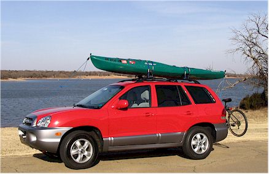
Here's my car at the lake all rigged up with my kayak and
bike.
I don't know why the paint looks all blotchy.
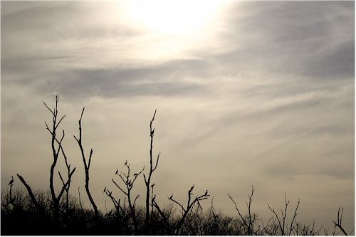
Here's a cool picture of the sky and the birds in the trees
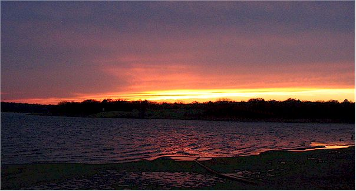
Here's a beautiful sunset I saw one night at the end of a run
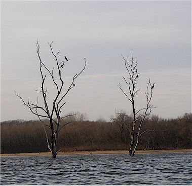
out in the trees in the shallows.
Scenes from a day at the lake with Eric in May '06
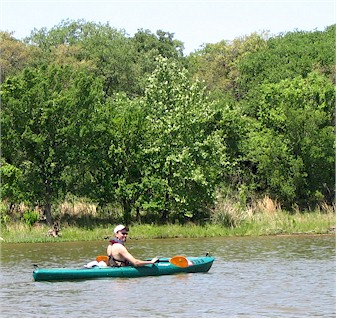
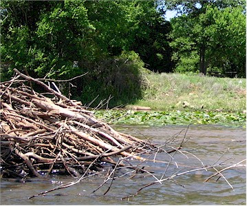
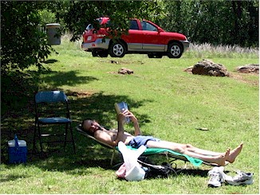
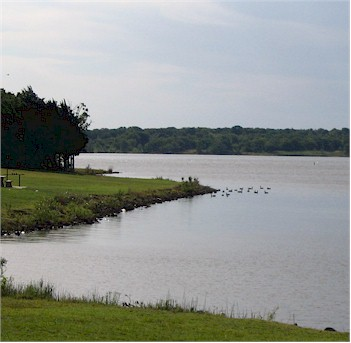
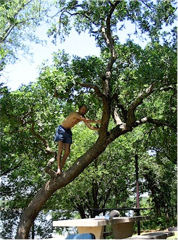
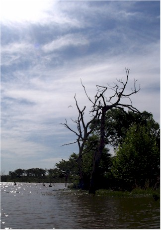
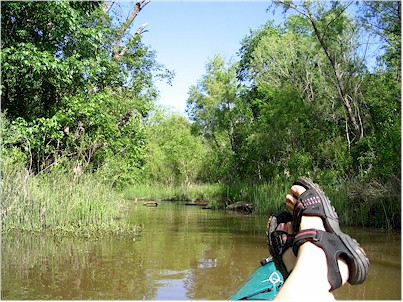
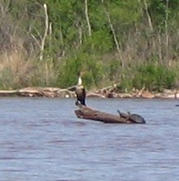
Blurry pic of a bird and two turtles
sharing a log as a resting spot
The fish were spawning that day which helped to make it a very
neat experience.
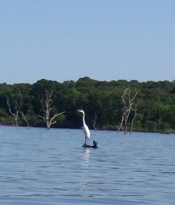
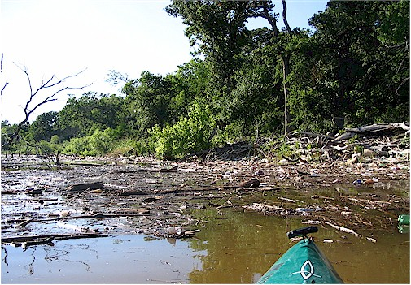
Trash and driftwood collects at the bottom of the lake.
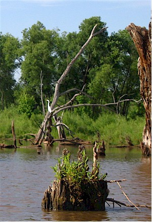
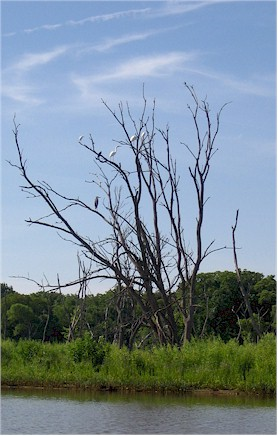
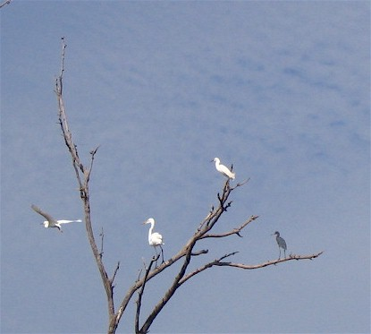
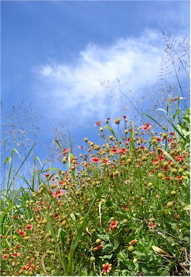
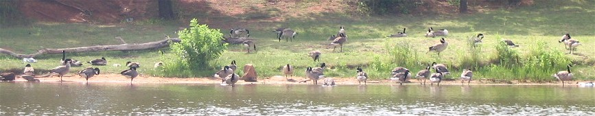
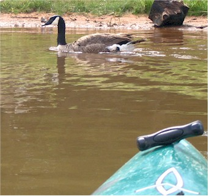
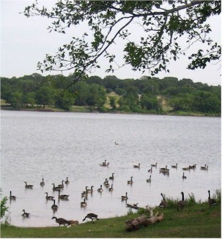
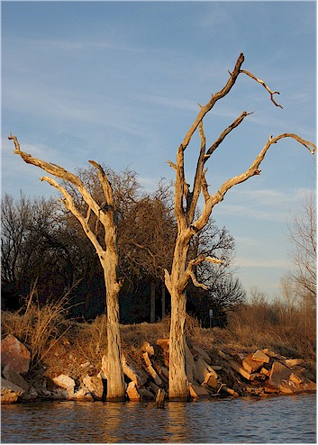
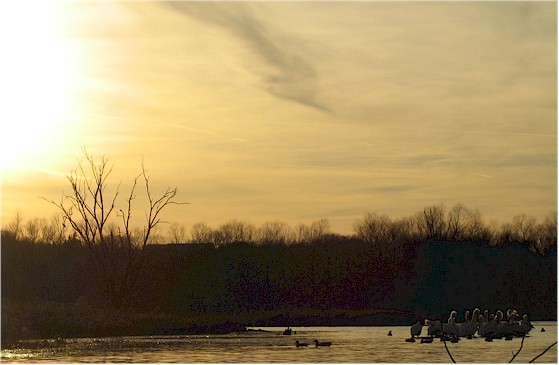
These guys were black & white pelicans - it was cool!
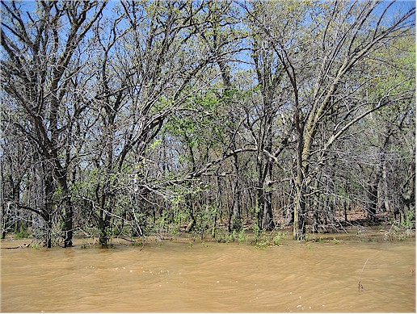
The lake was 5 feet above normal - here the water is
way up into the woods. I think it covered the trail I often run on.

This shows that I'm willing to look dorky on my own web site. Here I
am with my boat
and my new bike (thanks Jon!) And look Mom, I'm wearing my helmet - but
it's backwards!


It was incredibly warm and still on this Saturday in November - what a perfect day to be out in a kayak!


A shot of two birds flying overhead, and a cut out showing more detail of the birds on the right.


"happy place" - Lake Arcadia
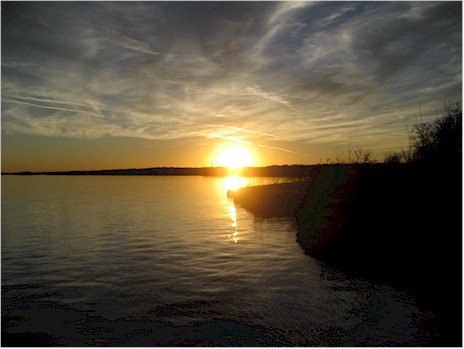
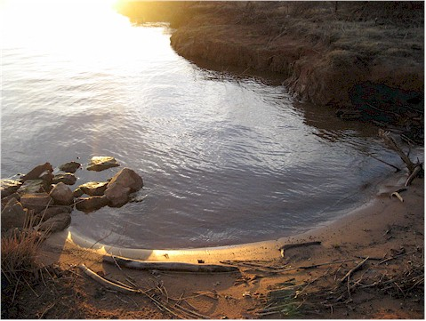
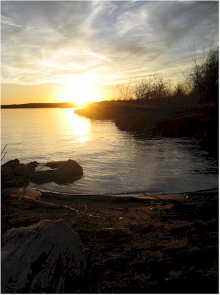
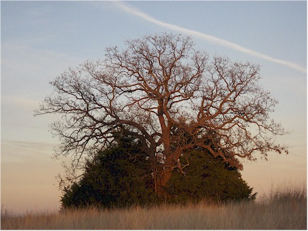
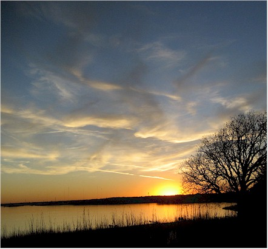
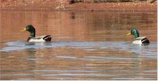
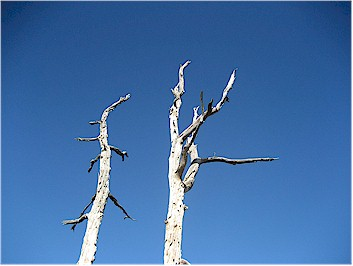
beautiful Saturday early in February.
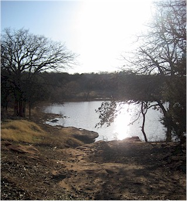
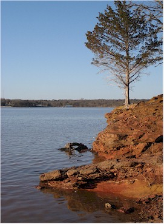
I did a trail run at Arcadia one evening after work, then piddled around enjoying the beautiful scenery. Nice, huh?
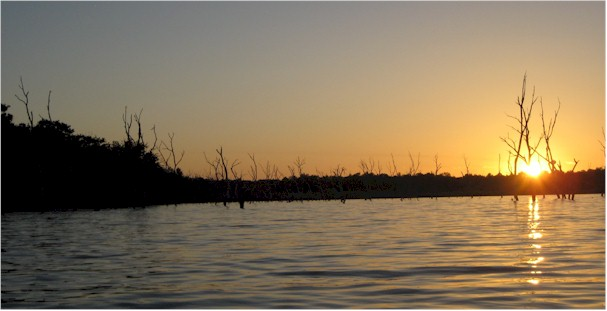
Watching the sun go down over the water.
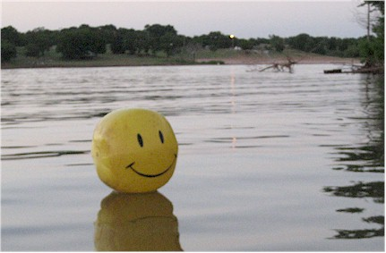
him hitch a ride back to the park with me.
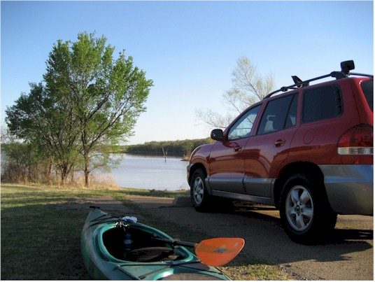
Have boat, will travel.
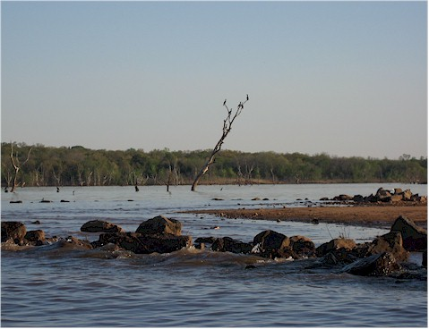
The southern end of the lake is my favorite - there are so many birds there and places to explore.